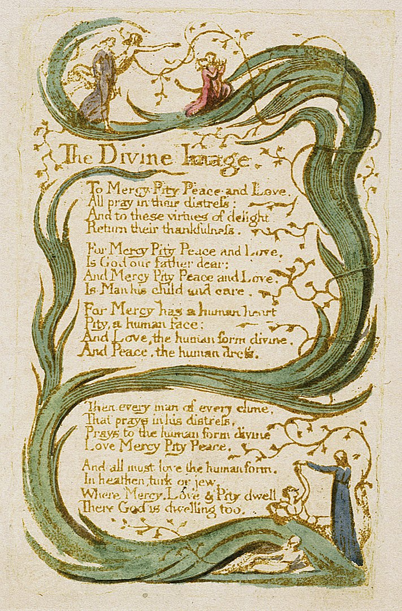

<TITLE>The Divine Image
</TITLE>


        <TR ALIGN="center" VALIGN="middle">
        <TD ALIGN="center" BGCOLOR="#FFFFFF">
        <FONT SIZE="+2">The Divine Image </FONT></TD>


<br>
To Mercy, Pity, Peace and Love
<br>
All pray in their distress
<br>
And to these virtues of delight
<br>
Return their thankfulness
<p>
For Mercy Pity Peace and Love
<br>
Is God our Father dear
<br>
And Mercy Pity Peace and Love
<br>
Is Man his child and care
<p>
For mercy has a human heart
<br>
Pity a human face
<br>
And Love, the human form divine
<br>
And Peace, the human dress
<p>
Then every man of every clime
<br>
that prays in his distress
<br>
Prays to the human form divine
<br>  Love Mercy Pity Peace.
<p>
And all must love the human form
<br> In heathen, Turk, or Jew;
<br>
Where Mercy Peace and Pity dwell<br>
There God is dwelling too.
<hr>Tenderness ......
Blake reminds us what we have to do if we want to be human&mdash;not that there was ever any mystery about it.   <p>
I love him; don't you..?
<hr>
<br>
(Thanks to wikip&aelig;dia for the picture)
<hr>


<hr>
Click here for <A HREF ="butter.html"> next week's poem </A>
<br> Click here for <A HREF ="hertha.html"> last week's poem </A>
<p>
<A HREF="http://www.dpmms.cam.ac.uk/~tf"> Return to Thomas Forster's home page </A> 
